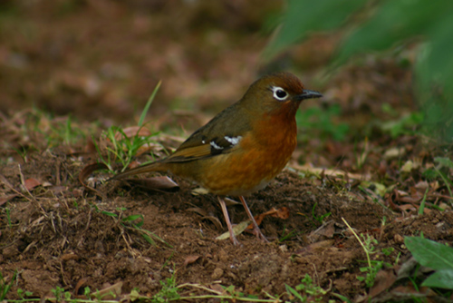

Geokichla piaggiae
The Abyssinian Ground-thrush is a quite attractive but equally hard to find species. The adults have deep rufous orange on the head and face with a distinct white eye ring the orange colour darkens on the breast and flanks and the upperparts are an olive brown excluding the browny-orange rump & tail.